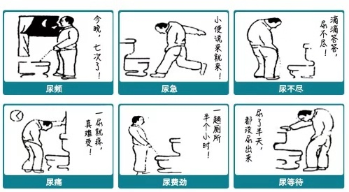
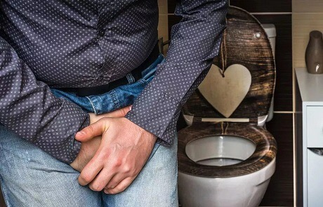
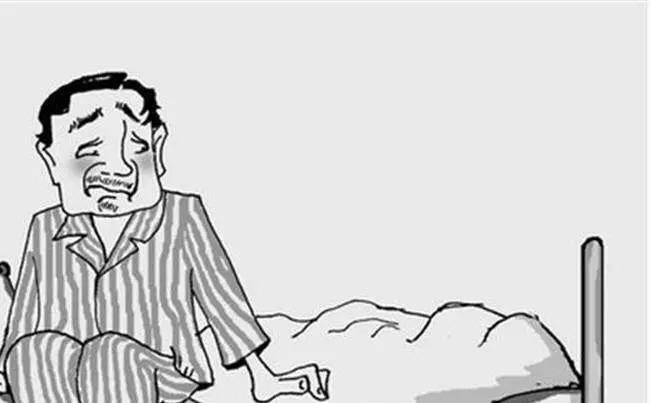
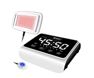
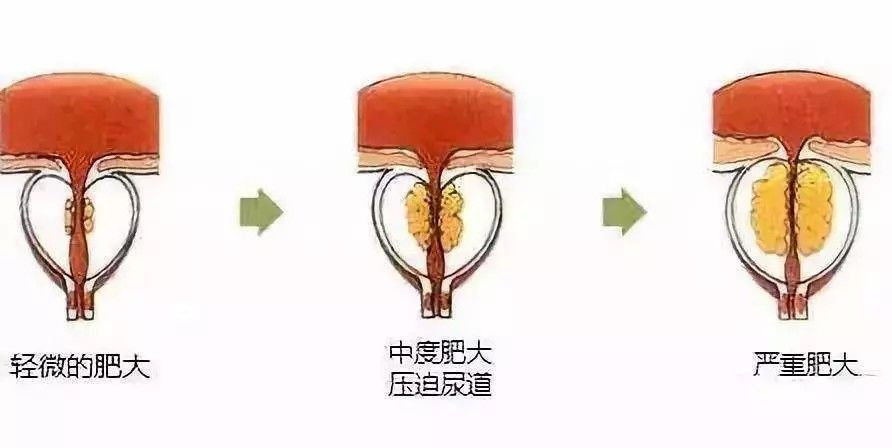

一招赶走尿急、尿痛、尿不尽......男人的福音！女人的福利！前列腺好了，生活更美好！
动作慢了憋不住
解开裤子尿不出
提上裤子还想尿
尿时又刺痛难耐
像被撒了一把辣椒面儿
还滴嘀嗒嗒不成线儿
裤脚鞋边都是尿星子

前列腺这个病，能逼疯一个男人，
这话一点不夸张！
今天我如论如何也要把我的康复“奇遇”讲一讲。大家耐心看完，也早点摆脱病痛，可千万别拖了，这个罪，真他妈不是人遭的！
总剩一点尿，想尿尿不出！
我今年63岁，前列腺病得了有6年多了。最初就是尿道口红，尿尿有点刺痛，没当回事儿。后来突然有一天，尿道口针扎一样的痛，慢慢小肚子也疼上了，还坠胀，浑身没劲儿，尿道口往外滴奶白一样的东西，到医院一查，前列腺炎，打了吊瓶，吃了消炎药，花了二千八百多，结果没挺上20天，又犯了。
我又做了介入治疗，也是没挺上几星期，又不行了。我只好又打吊瓶，都是抗生素，打上就见轻点儿，停药就犯，时间长了，打吊瓶也不起作用了。

就这么一来二去的，我开始尿频，尿急，尿滴沥，尿流分叉。一天跑二三十趟厕所，尿意一来，动作慢一点，裤衩就湿了，根本憋不住。一泡尿挤好几气儿，要不连不成线儿，要不两条线儿，分叉。尿还尿不净，怎么使劲儿都挤不出来。
等你提上裤子吧，尿液又不受控制的往出滴嗒，就像水龙头没拧紧，裤子总是潮乎乎，骚轰轰的，根本不敢往人堆儿凑，小孙女不让我抱，说姥爷身上“一股尿味儿”。更要命的是总起夜，一晚起来十来次，我爱人嫌我烦，跟我分房睡。

还有更尴尬的，有一回我去银行取钱，在路上尿意就来了，大街上又没厕所，连个避人的地方都没有，我就一路小跑往一个拐角的墙根跑，结果没等跑到地方，憋不住了，尿出来了，顺着裤管流到鞋里，地上……丢尽了脸。
从那以后，不方便找厕所的地方我一律不去。旅游，出远门，串亲戚，我都不去，坐不了长途大巴，也害怕憋不住尿在人前尴尬。平时就算去公园，我也要选个离厕所近的地方呆着。
现在想起那种日子，心里都不好受，尿也尿不痛快，睡也睡不踏实，浑身不舒坦，才50多岁，夫妻方面也不行了，太窝囊了。
最可怕的是，前列腺这位置通着膀胱，连着尿路，与肾更是比邻呼应，病情控制不好，就会步步下坡路，这是死规律。2016年，我爱人三舅家的哥哥，就是因为有前列腺病，发展为血尿，又演变成肾盂肾炎，最终病变为尿毒症，一个月要透析5次，生命都有危险。
这件事对我刺激特别大！
可怕啥来啥，前年我出现前列腺增生，腺体有油桃那么大，最大径6公分多，把尿道管都挤扁了，尿尿更遭罪了。期间我做过微波、注射、坐浴盆，喝中药，从肛门打药膏……没有能真正解决问题的，顶多缓解个三五天。后来我每次尿完，最后的尿液里总是有血样的淡红色，尿检红细胞超标50倍，随时可能并发肾炎。
当时我心里挺紧张，害怕像我妻哥一样，得上尿毒症，一辈子就完了。
可就在那之后没多久，老天终于向我开眼，让我意外得救！
得病这几年，我有个爱好，爱洗澡汗蒸。一是让自己干净点儿，而且那里去洗手间也方便。再就是汗蒸时烫烫屁股肚子，会舒服些。当然，我每次都自己带个干净的小垫子自用，这方面我特别注意。
那是2018年2月份，正月十五刚过完。我洗完澡刚进汗蒸室，一眼就看到我的老同事，老吕大哥。2年没见了，我俩都挺高兴。汗蒸完就去休息室要了壶茶，点了盘花生米，边喝边聊。等茶刚沏上，老吕让我等下，说去拿样东西。
接着就带我到他房间，从旅行箱里取出个小仪器，说这是他的“救命神器”，他前列腺毛病就是被这小东西治好的，这次出门时间长，特意带上了。
完了不由分说让我坐下，把效应带像裤子一样穿在身上。等打开开关，不一会，我就觉得整个下面和小肚子里面，暖流阵阵，说不出的舒服。
等摘下仪器，哎呀，小肚子坠胀感顿时轻了一半，下面也不那么凉腻腻的了。再去洗手间，尿流竟也大了点。
晚上睡前，我又用这小仪器治了一次，等第二天早上起来，到洗手间解手，哗，一股尿流嗞出来，连成粗线了，射程也超过脚面了，虽然还有点疼，但痛快不少。
益健堂北京运营总部“红蓝光”代言
老吕一向喜欢接受新事物，但这样的装备我还是第一次见，满脸疑惑开着玩笑问：“老吕，又在捣鼓啥高科技，连内裤都这么讲究。”老吕很得意的样子，打开了话匣子：“别奇怪。年纪大了，升官了，当上‘县长’了。别误会，是这的‘腺长’。”
说着老吕拿手向自己下面指了指，说：“前列腺增生，肥大，这些年，遭了老些罪了。现在总算找到这么一个好招，把我这老毛病给治好了。我现在走哪儿都带着它，巩固一阵子。”
我当时眼睛就亮了：“哎呀，大哥，咱俩真是难兄难弟啊，我这前列腺也废了，尿他妈好几回裤子，我都不好意思跟别人讲啊。”
关于这台前列腺治疗仪，我首先本着为所有人负责任的态度，保证它的正规性。至于其它细节，长按下方二维码识别，添加官方客服详询订购。
添加二维码，免费咨询
没想到，才开始治疗半个小时左右，我就感到热浪滚滚，一波接一波，在小腹和会阴处涌动，原来又沉又闷的腰变得又松快又舒服，凉湿腻腻的下面也变得干爽爽热乎乎的舒服。
半个小时后，我把仪器摘下来。一站起来，妈呀，不得了，小肚子坠胀感没有了，都一个小时没去厕所了，竟然还没有尿意。
我挺高兴，老吕更热心肠，说：“今天咱就在这呆着，有吃有喝的，正好咱哥俩两年多没见了，多聊聊。等隔三个小时，你再治一次，好使你就把它拿走，反正我也没事了。”
“行，咱俩在这叙叙旧，我要用着好用，也买一台，把你的拿家去接着巩固。”
待三小时后，我又治了一次，这次感觉更明显，腰不疼了，会阴处胀痛也减轻了一大半。我别提多高兴了，心里想这要是我的病治好了，我必须买两瓶好酒谢谢吕大哥。
看到我效果这么明显，吕大哥也咧开嘴乐了，跟我介绍说，这仪器属于全球顶尖科技，保密技术，得了很多奖，获得很多专利，目前可是抢手货，连外国都想引进呢。批号国家食药监局官网能直接查到。
我一听更放心了，就跟吕大哥要了这仪器的官方客服咨询订购微信，直接订购了一台。

等晚上回到家，奇迹再次发生了，睡前我竟然撒了长达一分钟的尿，尿液连成线，明显有劲儿了，好几年没这么痛快的尿回尿了，那天夜里只起五六次夜。
等我收到货，就迫不及待的继续治疗，效果简直可以用一天一个小变化，三天一个大变化来形容。明显不尿急了，尿能憋住，撒尿也痛快，也有劲儿了，每次撒尿听到便池里哗哗响的声音都觉得过瘾。
等治了有不到二十天的时间，我的尿滴白，尿滴沥，尿分叉都没有了，更没血样尿了，夜里顶多起一次夜，有时一觉到天亮。
到医院查，原来6.6*5.8*3.1大小的前列腺，缩回到3.6*2.8*2.6大小了，正常了。我一高兴，回家路上直接买了两瓶茅台就给老吕送了过去。
关于这台前列腺治疗仪，我首先本着为所有人负责任的态度，保证它的正规性。至于其它细节，长按下方二维码识别，添加官方客服详询订购。
添加二维码，免费咨询
后来在跟客服沟通过程中，我才了解到，这仪器治前列腺病效果这么好，完全得益于高科技的突破。
前列腺这个只有栗子大小的小东西，它外面有一层包膜，就像栗子壳，又韧又硬，药物根本进不去，就算能进去，前列腺里面还有32根小腺管，比绣花针还细，这些小腺管堵塞，细菌滋生，就形成前列腺炎，腺管越堵越多，前列腺就越来越大，形成增生肥大。

所以，治疗前列腺疾病，想要效果好，一是要打通外层包膜，二是疏通里面的小腺管。两者做到，没有治不好的前列腺病。但想实现这两点，药物，注射，普通理疗都对付不了这一层膜和32根小细管。
而我使用的仪器却巧妙的做到了，首先，它不仅能进行一透、二消、三缩、四修的四种形式的“综合理疗”，这种理疗可以迅速改善前列腺组织毛细血管微循环，使前列腺病灶瘀堵疏通，解除症状。恢复前列腺体功能。
在仪器的多维光源聚合能量作用下，包膜细胞间隙就完全张开，这种聚合能量，热力里有能量，能量里有热力，，促进32 根小腺管一张一缩，逐渐排出淤积的腺毒，腺毒排净了，腺体缩小了，尿管不受压迫了，撒尿就痛快了，前列腺的炎症啊，增生肥大也就不存在了。什么尿急、尿 频、尿痛、尿无力、尿滴沥、尿分叉……都不见了。
益健堂北京运营总部“红蓝光”代言
现在，我迎风也能尿一丈，出门坐五六个小时大巴车不上厕所都没事儿。而且男性的功能也回来了，不仅重获新生，还重获第二春。
不过，现在市场上的产品鱼龙混杂，很多达不到效果还耽误治疗时间。请大家一定要认准益健堂商标，不要再多花一分冤枉钱。
总之，前列腺的治疗弯路我已经走过了，也吃尽了苦头，我相信这么重的情况都轻松治好了，大家用了，一定比我好的还快！
关于这台前列腺治疗仪，我首先本着为所有人负责任的态度，保证它的正规性。至于其它细节，长按下方二维码识别，添加官方客服详询订购。
添加二维码，免费咨询
扫描下方二维码
添加客服免费咨询
尿频、尿急、尿不尽....帮您解决男性困扰